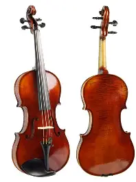

A música pop é eclética, e muitas vezes incorpora elementos de outros estilos, como o urban, dance, rock, música latina, soul e country.
O funk (pronúncia: [fânc]) é um gênero musical que se originou em comunidades afro-americanas em meados da década de 1960, quando músicos afro-americanos criaram uma nova forma de música rítmica e dançante através da mistura de soul, jazz e rhythm and blues.
Música de concerto, chamada popularmente de música clássica ou música erudita, é a principal variedade de música produzida ou enraizada nas tradições da música secular e litúrgica ocidental.

O violino é um instrumento musical, classificado como Instrumento de cordas ou cordofone. Foi inventado por Gasparo de Salò, um italiano que viveu entre os anos 1540 e 1609. O termo "violino" foi introduzido na língua portuguesa no século XX. Até então, a designação do instrumento era rabeca, palavra que ainda se utiliza em muitos lugares.